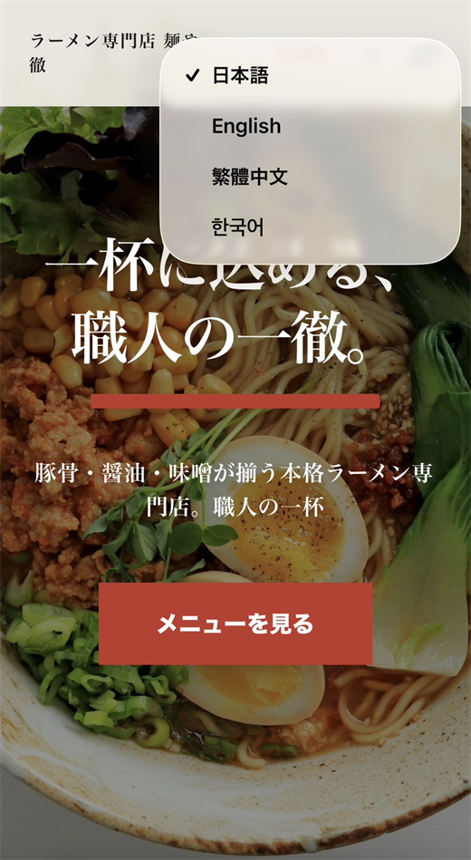

いま、沖縄の店で起きていること
ホームページがあっても、
約7割は日本語だけです。
国際通りを歩けば、外国人観光客のほうが多い時間帯があります。それでも、多くの店はGoogleマップに写真が数枚あるだけ。メニューも、営業時間も、どこにあるのかも、日本語でしか書かれていません。
調べても読めない店は、選ばれません。料理がどれだけおいしくても、候補にすら入らないまま、観光客は隣の店に入っていきます。
出典：2026年Landy調べ、沖縄県内675件調査（Google Places APIおよび独自スクレイピングによる）。HPあり内訳は概算。
Landy（ランディ）
店名と住所を入れるだけで、
4言語のHPができます。

-
入力は日本語だけ
店名・住所・メニューを日本語で入れると、英語・中国語・韓国語を合わせた4言語のページが自動でできあがります。
-
月額1,980円で持てる
制作会社に頼むと10〜30万円かかることが多い多言語サイトを、初期費用49,800円・月額1,980円で持てます。
-
店がやるのは、最初の入力だけ
仕込みや接客で手いっぱいの店でも続けられるように、更新の手間をできるだけ減らしています。
日本語English中文한국어
なぜ、あなたに頼みたいのか
あなたの紹介が、
店を世界に開く。
知らない会社から届く営業の電話を、店の人はほとんど聞きません。でも、顔を知っている常連や、いつも来てくれる取引先の話なら聞いてくれます。Landyがパートナーを募集しているのは、そのためです。
- 通っている店が、外国人のお客さんで埋まるのを見たい。
- 取引先に、本当に役に立つものをひとつ持っていきたい。
- その結果として、1件につき1万円が入る。
順番は、この通りでいいと思っています。
紹介の流れ
営業トークは要りません。
URLを渡すだけです。
-
STEP 1
LINEで登録して、専用URLを受け取る
友だち追加して案内を受け取るだけ。専用URLは順次お送りします。
-
STEP 2
知っている飲食店に、URLを送る・見せる
LINEで送っても、店先でスマホを見せても構いません。説明はページが代わりにします。
-
STEP 3
契約と入金が確認できたら、1万円が確定
専用URLから申し込みがあれば、あなたの紹介として自動で記録されます。
登録後、専用URLをお送りします。審査なし・費用ゼロ
報酬について
1件10,000円。
上限はありません。
| 報酬額 | 成約1件につき 10,000円（上限なし） |
|---|---|
| 締め・支払い | 月末締め・翌月末払い |
| 受け取り方法 | 楽天銀行メルマネ メールアドレス宛てに送金します。受け取る銀行口座はどこでも構いません。 |
紹介件数ごとの報酬
| 成約件数 | 報酬 |
|---|---|
| 1件 | 10,000円 |
| 3件 | 30,000円 |
| 10件 | 100,000円 |
紹介できる店の数に比例します。月収を保証するものではありません。
登録後、専用URLをお送りします。審査なし・費用ゼロ
はじめる前に
向いている人、
向いていない人。
向いている人
- ○飲食店の知り合いが3店以上いる
- ○沖縄の店をSNSなどで発信している
- ○1件ずつ、丁寧に紹介したい
向いていない人
- ×飲食店との接点がまったくない
- ×短い期間で大きな金額を得たい
よくある質問
質問と答え
登録に費用はかかりますか？
かかりません。登録は無料です。
ノルマはありますか？
ありません。紹介件数ゼロの月があっても問題ありません。
店から「初期費用が高い」と言われたら？
初期費用はホームページの制作費です。制作会社に多言語サイトを頼むと10〜30万円かかることが多いため、それを大幅に抑えた金額になっています。無理に勧める必要はありません。
会社員でも参加できますか？
参加できます。ただし副業に関するルールは会社によって違うため、お勤め先の就業規則をご確認ください。
報酬に税金はかかりますか？
報酬は業務委託料としてお支払いします。給与所得のある方で、副業などの所得が年間20万円を超える場合は、確定申告が必要になることがあります。詳しくは税務署または税理士にご確認ください。
知っている店を、
世界に開く仕事です。
まずはLINEで登録して、専用URLを受け取ってください。
使うかどうかは、そのあと決めてもらって大丈夫です。
登録後、専用URLをお送りします。審査なし・費用ゼロ
パソコンでご覧の方は、
スマートフォンで読み取ってください。